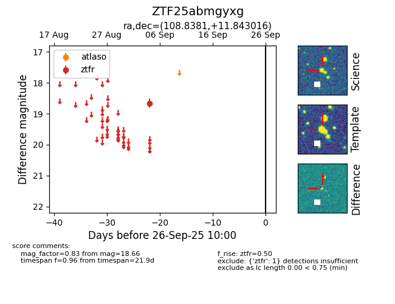

FINK: ZTF25abmgyxg
Lasair: ZTF25abmgyxg
ALeRCE: ZTF25abmgyxg
ZTF25abmgyxg (ztf,fink)
equatorial (ra, dec) = (108.8381,+11.84302)
galactic (l, b) = (204.9683,+10.62073)

last ztfr=18.66
1 ztfr detections